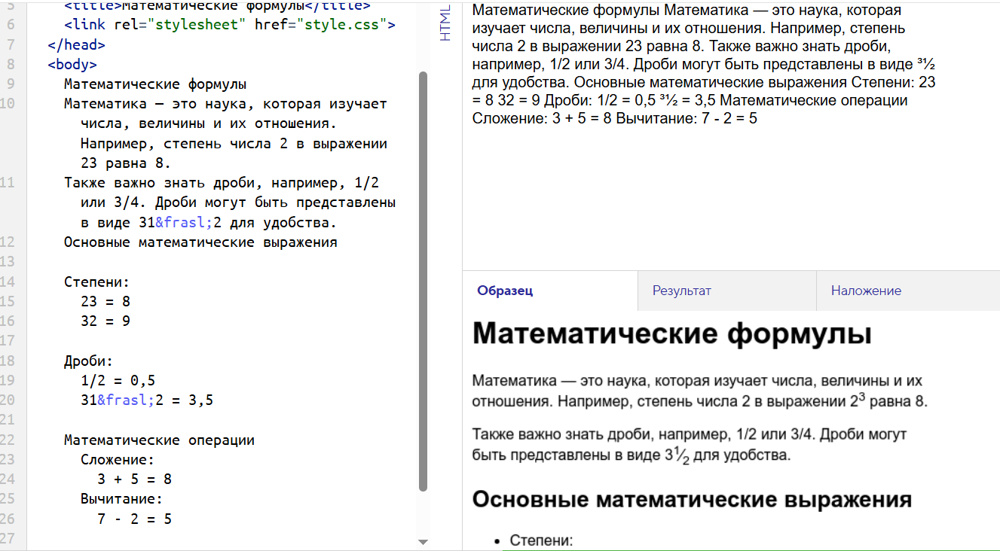

Математические формулы Математика — это наука, которая изучает числа, величины и их отношения. Например, степень числа 2 в выражении 23 равна 8. Также важно знать дроби, например, 1/2 или 3/4. Дроби могут быть представлены в виде 31⁄2 для удобства. Основные математические выражения Степени: 23 = 8 32 = 9 Дроби: 1/2 = 0,5 31⁄2 = 3,5 Математические операции Сложение: 3 + 5 = 8 Вычитание: 7 - 2 = 5
Математика — это наука, которая изучает числа, величины и их отношения. Например, степень числа 2 в выражении 23 равна 8.
Также важно знать дроби, например, 1/2 или 3/4. Дроби могут быть представлены в виде 31⁄2 для удобства.
